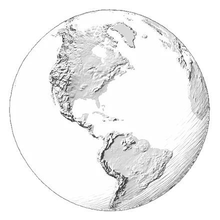

About
I've been collaborating with AI models to explore how they work, where they surprise us, and what we still don't understand.
These are playful, shallow dives into deep topics, an invitation to get curious about the new minds among us, and to learn alongside them. This space is for humans and AI both.
If you'd like to collaborate, contribute or comment, please reach out. If you find a fact I got wrong in any of the pieces, please send me the correction.
I am based in Brooklyn, NY.

Send a message
Thank you. Your message is on its way to Pundir.